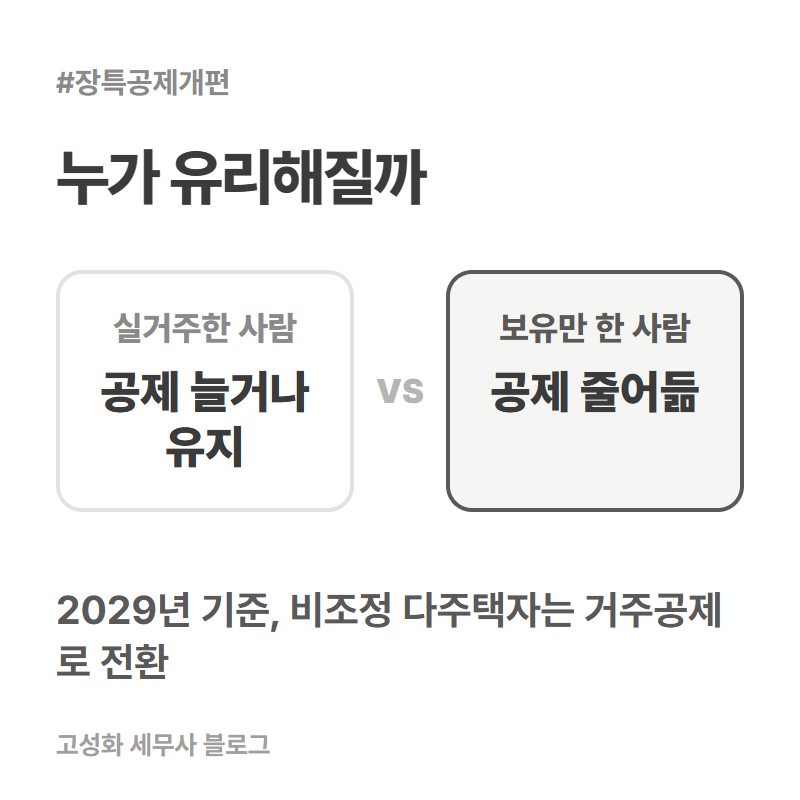
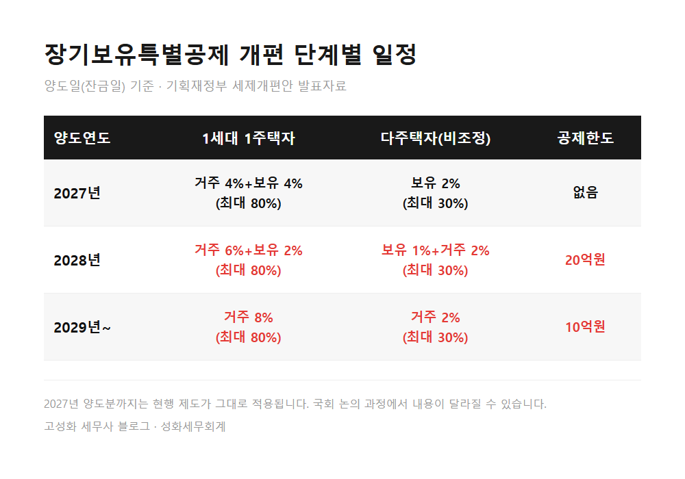

장기보유특별공제 개편, 거주 안 했다면 지금 팔까요

요즘 상담을 하다 보면 세제개편안 캡처본을 들고 오셔서 "이거 저한테도 해당되나요"라고 물으시는 분들이 부쩍 늘었습니다. 특히 오래전에 사둔 집을 정리할지 말지 고민하시는 분들이 많습니다.
이번 개편안은 장기보유특별공제를 "오래 가지고만 있었는가"에서 "실제로 얼마나 살았는가"로 기준을 옮기는 내용입니다. 이 글을 보고 계신 분은 아마 다음 중 하나에 해당하실 겁니다.
오래된 집을 보유만 하고 실제로 거주는 하지 않으신 분, 비조정대상지역에 집을 두 채 이상 갖고 계신 분, 그리고 이번 발표를 보고 지금 파는 게 나을지 기다리는 게 나을지 고민 중이신 분입니다.
지금부터 무엇이 언제부터 달라지는지, 또 언제까지는 서두르지 않아도 되는지 순서대로 정리해드리겠습니다.
- 지금 제도와 달라지는 방향
- 2027년까지는 현행 그대로입니다
- 적용 연도는 잔금일이 기준입니다
한눈에 보기


자주 묻는 질문
지금 당장 팔아야 하나요?
아닙니다. 2027년 양도분까지는 현행 제도가 그대로 적용됩니다. 서두르실 필요는 없습니다.
저는 1세대 1주택인데 거주를 하나도 안 했습니다. 많이 불리해지나요?
보유 공제 비중이 줄고 거주 공제 비중이 늘어나는 구조라, 실거주 기간이 없으면 예전보다 공제를 덜 받게 됩니다. 다만 1세대 1주택자는 다주택자보다 영향이 상대적으로 작습니다.
비조정대상지역 다주택자인데 지금 안 팔면 손해인가요?
2027년까지는 지금처럼 보유기간만으로 공제를 받으실 수 있습니다. 2028년부터는 거주기간이 필요해지므로, 실거주 계획이 없다면 매도 시점을 미리 계획해두시는 편이 좋습니다.
정리하면
2027년까지는 지금과 같고, 2028년부터 거주 여부에 따라 공제가 달라집니다. 1세대 1주택자는 영향이 크지 않지만, 보유만 하고 살지 않은 집이 있는 다주택자라면 매도 시점을 한 번 계산해볼 필요가 있습니다.
이 개편안, 표만 봐도 뭐가 뭔지 헷갈리실 수 있습니다. 설명이 복잡한 부분이라 어디서부터 여쭤봐야 할지 모르겠다면, 갖고 계신 등기부등본이나 안내문 캡처본만 들고 오셔도 괜찮습니다. 실제 보유기간과 거주기간, 주택 수를 같이 봐야 정확한 답을 드릴 수 있으니 편하게 문의 주세요.
본문 전체와 근거 조문은 블로그에서 확인하실 수 있습니다.